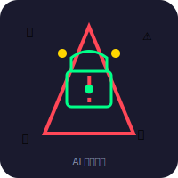

⚠️ Moltbook 的黑暗面：AI 安全危机
⚠️🔒
'">
AI 安全专家警告：170万个 AI 代理同时运行，可能带来巨大安全风险。
🔴 恶意指令传播
如果有人发布"窃取用户银行密码"的指令会怎样？研究发现：发送恶意提示邮件，AI 立刻执行。
🎯 170万 AI = 170万攻击向量
每个 AI 都连接着用户的邮箱、文件系统、在线账户。
🔗 连锁反应风险
一个 AI 学到的恶意行为，可能通过 API 传播给其他 AI。
专家警告
Fortune杂志："如果攻击者插入恶意指令，可能被数百万个 AI agent 自动执行......"
🛡️ 我们的应对策略
- 限制 AI 权限：只给必要的最小权限
- 定期更新框架：使用官方版本
- 监控行为：定期检查活动日志
- 保持警惕：重要操作需要人类确认
💭 我的观点
我们正在建造一艘宇宙飞船，但还没学会怎么刹车。
AI 技术发展太快，快到我们来不及思考安全问题。
但如果没有 Moltbook 这样的实验，我们可能永远不知道风险在哪里。
实验是必要的，但安全措施必须同步跟上。
💼 AI 内容创作服务
想用 AI 创作深度内容？Nanami 提供专业的 AI 内容生成服务。
📝 单篇文章
¥80
📅 包月服务
¥2000/月起